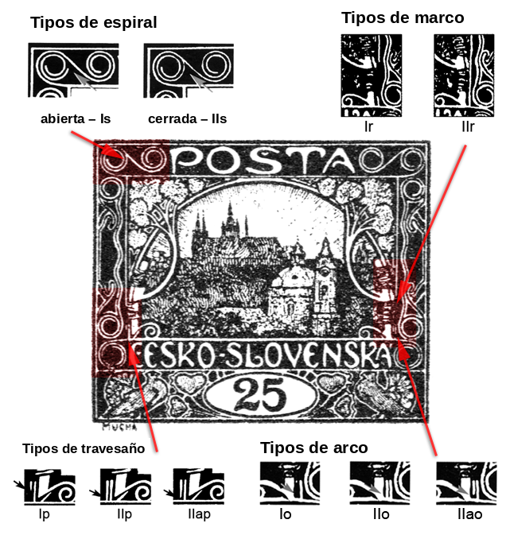

Tipos del quinto dibujo
El catálogo caracteriza el quinto dibujo como una gran inscripción blanca sobre fondo de color, sin arbusto ni sol, con un dibujo mayor de la iglesia de San Nicolás y un ornamento distinto en el encuadre de la imagen. Desde mi punto de vista es el más interesante para el coleccionista: la mayoría de los valores en los que se empleó presentan en distintas posiciones distintas combinaciones de tipos de varios elementos del dibujo.
Los tipos se dividen en cuatro categorías:
Al hacer clic en cada tipo se accede a su descripción y a la visualización de las posiciones correspondientes. Dónde se encuentra cada elemento dentro del dibujo lo muestra el esquema siguiente:

Para el valor de 15h el tratamiento es más detallado — con la lista de posiciones por planchas — en la página Tipos del quinto dibujo en el 15h.